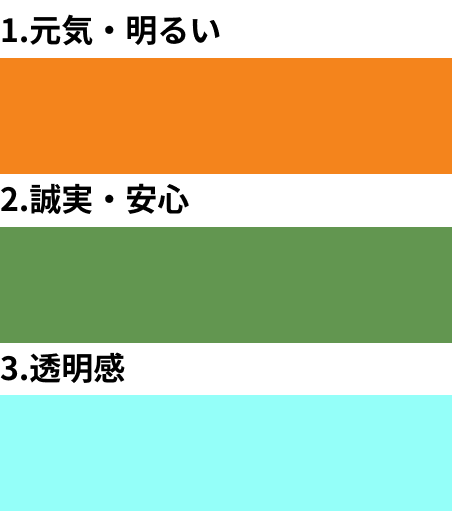
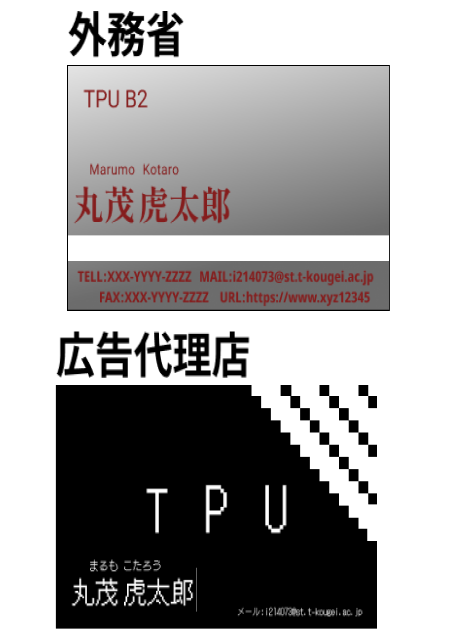
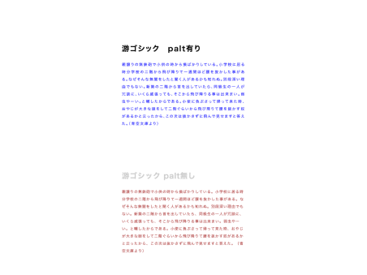
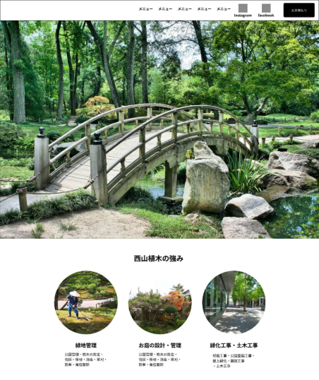
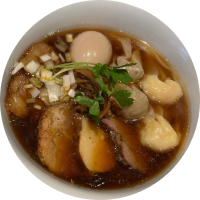

Tasks
- 色の印象
-
色だけで三種類の印象を表現する、という課題。元気・明るいという印象には暖色系の中でも黄色が混ざり、明るい橙色を。誠実・安心という印象には和色のような印象を受ける鈍い黄緑を。透明感という言葉を受けたとき、たいていの人は水、空、海のどれかを想起すると思われるなので、淡い水色で表現した。
- 
- ターゲットに合わせた名刺
-
ターゲットに合わせた名刺をデザインする課題。外務省向けの名刺は役所向けということで少しかっちりしたデザインを考え灰色を記帳に暗めの赤でデザイン。外務省ということで英語を重点的に使うことで英語圏の方にもわかりやすく。広告代理店向けのものは奇抜で目を引くデザインを、と全体をドット調に。最低限に必要な情報は入れながらも、黒と白でシンプルにまとめました。
- 
- 文字組をしたhtml
-
サンプルサンプルサンプルサンプルサンプルサンプルサンプルサンプルサンプルサンプルサンプルサンプルサンプルサンプルサンプルサンプルサンプルサンプルサンプルサンプルサンプルサンプルサンプルサンプルサンプルサンプルサンプルサンプルサンプルサンプルサンプル
- 
- 植木屋のWebデザイン
- 架空の植木屋のWebサイトのデザインをする課題。植木屋に依頼する顧客は「綺麗にしてもらいたい」という客が多いはず、と考えて、緑の美しさを前面に出した画像を多く選びました。
- 
Profile

- 名前:丸茂虎太郎
- 出身:長野県
- 趣味:ゲーム・読書・カラオケ・食べ歩き
- 使うソフトウェア:SolidWorks・StudioOne5・Office